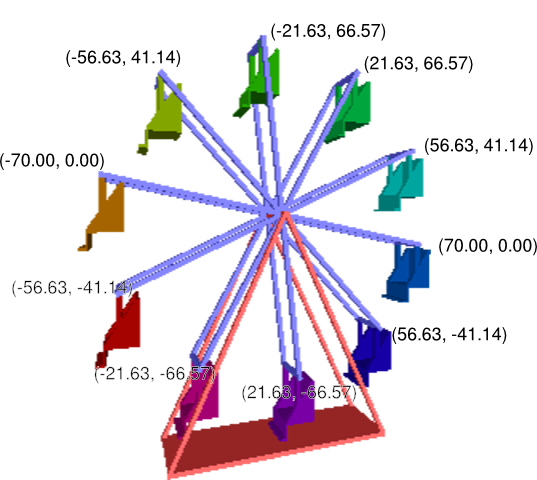

Restantes:
74610
Usuário:
Notas:
Q1: 100
Q2: 90
Q3: 100
Q4: 100
Q5: 100
Q6: 100
Q7: 100
Q8: 100
Q9: 100
Q10: 100
Q11: 100
Q12: 90
Q13: 100
Q14: 100
Q15: 100
Q17: ?
Q18: ?
Q19: ?
Q20: 100
Exercícios de Repetição - 10/14ABC
Prova Aberta Até: 12/05/2017 08:00:00
Número Máximo de Tentativas: 6
Atenuação da Nota por Tentativa (multiplicativa): 0.9
Nota Máxima por Tentativa:
- 100
- 90
- 81
- 72.9
- 65.61
- 59.049
Descrição:
QUESTÕES
Questão 1: Estrutura de repetição - Tabuada (While)
Faça a tabuada de 1 a 10, usando apenas do e while.
Exemplo de Saída:
1 x 1 = 1 1 x 2 = 2 1 x 3 = 3 . . . 10 x 8 = 80 10 x 9 = 90 10 x 10 = 100
Peso: 1
Última tentativa: 19/10/2016 16:11:25
Tentativas: 1 de 6
Nota (0 a 100): 100
Status ou Justificativa de Nota: Nenhum erro encontrado.
Tentativas de Resposta:
Questão 2: Estruturas de repetição - Ganhador
Faça um programa para definir o ganhador de um sorteio feito em uma festa. Conhecendo a lista de participantes, por ordem de chegada, sua tarefa é determinar o número do ingresso premiado, sabendo que o ganhador é o primeiro participante que tem o número do ingresso igual à sua posição de entrada na festa. Se não houver ganhador a saída do seu programa deve ser 0.
Entradas:
int quantidadeIngressos- inteiro com o total de ingressos vendidos.- número de cada ingresso por ordem de chegada - (inteiros).
Saídas
int premiado- Número do ingresso sorteado.
Exemplos de Entradas e Saídas:
Entradas:
4
2 4 3 1
Saídas: 3
Peso: 1
Última tentativa: 03/11/2016 17:28:13
Tentativas: 2 de 6
Nota (0 a 100): 90
Status ou Justificativa de Nota: Nenhum erro encontrado.
Tentativas de Resposta:
Questão 3: Estruturas de Repetição - Números triangulares
Um número triangular é um número natural que pode ser representado na forma de triângulo equilátero (veja a ilustração). Sendo os primeiros números: 1, 3, 6, 10, 15, 21, 28, e assim por diante.
Faça um programa que, dado um número inteiro positivo N, retorne o N-ésimo número triangular. O n-ésimo número triangular pode ser obtido pela soma de n ao (n-1)-ésimo número triangular. Ou seja:
NumTriang(1) = 1
NumTriang(N) = N + NumTriang(N-1)
Exemplo de entrada: 4 Exemplo de saída: 10
Peso: 1
Última tentativa: 07/11/2016 22:27:56
Tentativas: 1 de 6
Nota (0 a 100): 100
Status ou Justificativa de Nota: Nenhum erro encontrado.
Tentativas de Resposta:
Questão 4: Estruturas de repetição - números ordenados
Faça um programa que leia cinco número inteiros. O programa deve então determinar se os números estão ou não ordenados. Caso estejam ordenados, o programa deve escrever 1, caso contrário deve escrever 0.
Entradas:
- Cinco números inteiros.
Saídas:
- Imprimir 1 se a sequência estiver ordenada ou 0 caso contrário.
Exemplos de Entrada e Saída:
Entradas:
1 2 3 4 5
Saídas:
1
Peso: 1
Última tentativa: 04/11/2016 18:33:21
Tentativas: 1 de 6
Nota (0 a 100): 100
Status ou Justificativa de Nota: Nenhum erro encontrado.
Tentativas de Resposta:
Questão 5: Estruturas de Repetição - Palavra Certa
Crie um programa que receba como entrada uma sequência de caracteres "a" e "b". A sequência deve ter o tamanho de 10 caracteres. Seu programa deverá retornar 1 se o número de caracteres "a" for menor que o total de caracteres "b", ou retornar 0 caso não ocorra a condição.
Entrada:
a b b b a a b b b a
Saída:
1
Peso: 1
Última tentativa: 04/11/2016 18:43:54
Tentativas: 1 de 6
Nota (0 a 100): 100
Status ou Justificativa de Nota: Nenhum erro encontrado.
Tentativas de Resposta:
Questão 6: Estrutura de repetição - Multiplicação com soma
Faça um programa que receba dois números inteiros. Faça a multiplicação entre eles usando apenas a adição. Escreva cada passo da multiplicação.
Obs: Soma sempre o primeira valor pelo segundo, como feito no exemplo.
Entradas:
int n1, n2- Os dois números inteiros.
Saídas:
- Cada passo da multiplicação (
int).
Exemplos de Entradas e Saídas:
Entradas:
5 3
Saídas:
5 10 15
Peso: 1
Última tentativa: 04/11/2016 18:33:00
Tentativas: 1 de 6
Nota (0 a 100): 100
Status ou Justificativa de Nota: Nenhum erro encontrado.
Tentativas de Resposta:
Questão 7: Estruturas de Repetição - Saída lógica
Faça um programa que lê um divisor (número inteiro) e depois lê vários números até aparecer um número tal que o resto da divisão pelo divisor seja 2.
Ao encontrar tal número, o programa deve escrever o quociente da sua divisão pelo divisor.
Exemplo de entrada:
5 10 13 19 15 17
Exemplo de saída:
3
Peso: 1
Última tentativa: 04/11/2016 19:30:00
Tentativas: 1 de 6
Nota (0 a 100): 100
Status ou Justificativa de Nota: Nenhum erro encontrado.
Tentativas de Resposta:
Questão 8: Estrutura de repetição - Somando os divisores de N
Faça um programa que leia um número inteiro N, maior ou igual a dois, e informe a soma de todos os divisores positivos de N compreendidos no intervalo [1,N]. Considere que um determinado número M é um divisor positivo de N, se o resultado da divisão de N por M resultar em um outro número inteiro. A saída de seu programa deverá seguir o formato: D1+D2+D3+...+Dk=RESULTADO, em que D1, D2,...,Dk correspondem aos divisores de N no intervalo [1,N] e RESULTADO é o somatório destes divisores.
Entradas:
- Um inteiro positivo N.
Saídas:
- Sequência dos divisores de N, separados pelo símbolo de “+”, seguida pelo símbolo de “=” e o valor do somatório dos divisores. Note que a formatação de saída não deve incluir símbolos de espaço.
Exemplo de entrada:
10
Exemplo de saída:
1+2+5+10=18
Peso: 1
Última tentativa: 08/11/2016 01:08:02
Tentativas: 1 de 6
Nota (0 a 100): 100
Status ou Justificativa de Nota: Nenhum erro encontrado.
Tentativas de Resposta:
Questão 9: Estrutura de repetição - Cálculo de Fatorial
Faça um programa que receba um número inteiro e positivo e calcule seu fatorial.
Entrada:
Um número inteiro
Saída:
Fatorial do número
Exemplo de entrada:
5
Exemplo de saída:
120
Peso: 1
Última tentativa: 04/11/2016 19:58:48
Tentativas: 1 de 6
Nota (0 a 100): 100
Status ou Justificativa de Nota: Nenhum erro encontrado.
Tentativas de Resposta:
Questão 10: Estruturas de Repetição - Sequência Fibonacci
Desenvolva um programa que exiba no dispositivo de
saída padrão a sequência da série de Fibonacci até o termo N, lembrando
que esta série é definida da seguinte forma:
Fib(1) = 0
Fib(2) = 1
Fib(N) = Fib(N - 2) + Fib (N -1)
A entrada deve ser constituída de um número inteiro N que corresponde à posição do último termo desejado.
Cada valor da sequência até o termo N deve ser exibido separadamente no dispositivo de saída padrão.
Entradas:
- Número inteiro N que indica a quantidade de termos da sequência de Fibonacci a serem exibidos.
Saídas:
- Sequência de números inteiros que indica os N primeiros valores da sequência de Fibonacci .
Exemplo de entrada:
7
Exemplo de saída:
0 1 1 2 3 5 8
Exemplo de entrada:
1
Exemplo de saída:
0
Peso: 1
Última tentativa: 08/11/2016 14:39:31
Tentativas: 1 de 6
Nota (0 a 100): 100
Status ou Justificativa de Nota: Nenhum erro encontrado.
Tentativas de Resposta:
Questão 11: Estrutura de Repetição - Progressão Geométrica
Fazer um programa que calcule a progressão geométrica com razão R indicada pelo usuário. O programa deve imprimir os N primeiros termos da progressão (N é indicado pelo usuário).
O primeiro termo da progressão é sempre 1 (N igual a um). O segundo termo é 1*R. O terceiro é 1*R*R, e assim sucessivamente.
Entrada:
- razão R da PG
- número de termos N da PG a serem impressos
Saídas:
- N primeiros termos da PG de razão R
Exemplo de entrada:
0.5 4
Exemplo de saída:
1 0.5 0.25 0.125
Peso: 1
Última tentativa: 04/11/2016 20:28:22
Tentativas: 1 de 6
Nota (0 a 100): 100
Status ou Justificativa de Nota: Nenhum erro encontrado.
Tentativas de Resposta:
Questão 12: Estrutura de Repetição - Maior e Segundo Maior
Faça um algoritmo que leia 7 números reais. Após
isso, imprima o maior valor e o segundo maior valor. Imprima também a
média dos valores desconsiderando o maior e o segundo maior.
Exemplo de entrada:
13
2
5
6
4
3
12
Exemplo de saída:
13
12
4
Peso: 1
Última tentativa: 09/11/2016 15:29:32
Tentativas: 2 de 6
Nota (0 a 100): 90
Status ou Justificativa de Nota: Nenhum erro encontrado.
Tentativas de Resposta:
Questão 13: Estruturas de Repetição - Máximo Divisor Comum
Faça um programa que recebe dois números positivos quaisquer e calcule o máximo divisor comum (MDC) entre eles. Para isso, sugere-se usar o algoritmo de Euclides.
O algoritmo de Euclides é assim:
- Enquanto o menor dos números for maior que zero:
- O maior número passa a ser o menor de antes.
- O menor número passa a ser o resto da divisão do maior de antes pelo menor de antes.
- O MDC é o maior número.
Entrada: dois números inteiros em qualquer ordem.
Saída: o máximo divisor comum entre os dois números.
Exemplo de Entrada:
12 18
Exemplo de Saída:
6
Peso: 1
Última tentativa: 05/11/2016 09:07:31
Tentativas: 1 de 6
Nota (0 a 100): 100
Status ou Justificativa de Nota: Nenhum erro encontrado.
Tentativas de Resposta:
Questão 14: Estruturas de Repetição - Número de Euler
Na matemática, o número de Euler, denominado em homenagem ao matemático suíço Leonhard Euler, é a base dos logaritmos naturais. As variantes do nome do número incluem: número de Napier, constante de Néper, número neperiano, constante matemática, número exponencial(Wikipédia)
Com as informações acima, faça um algoritmo que calcule o número de euler utilizando a fórmula a seguir:
Dica: armazene o resultado do cálculo do fatorial em uma variável de ponto flutuante.
Entradas:
int n- a precisão a qual o número de euler será calculado.
Saídas:
- A aproximação do número de euler (double) com a precisão especificada.
Exemplos de Entradas e Saídas:
Entradas:
20
Saídas:
2.71828
Peso: 1
Última tentativa: 08/11/2016 10:26:35
Tentativas: 1 de 6
Nota (0 a 100): 100
Status ou Justificativa de Nota: Nenhum erro encontrado.
Tentativas de Resposta:
Questão 15: Estruturas de Repetição - Tabuleiro
Faça um programa que escreve tabuleiros quadrados de tamanho variável. O programa deve usar iteração para tratar o tamanho variável.
Um tabuleiro é um quadrado com posições pretas e brancas dispostas alternadamente. Para representar as posições de cores diferentes, use o caractere # (cerquilha) para posições pretas e . (ponto) para posições brancas. O canto superior esquerdo do tabuleiro deve ser branco.
Obs: em Python para imprimir uma variável string texto e a próxima impressão continuar na mesma linha, você pode usar: print(texto, end="")
Entradas:
- Um número inteiro que descreve as dimensões do tabuleiro (número de linhas e colunas).
Saídas:
- Sequências alternadas dos caracteres # e . (sem espaços em branco) em linhas diferentes, criando a aparência de um tabuleiro.
Exemplo de entrada:
5
Exemplo de saída:
.#.#. #.#.# .#.#. #.#.# .#.#.
Peso: 1
Última tentativa: 08/11/2016 02:28:20
Tentativas: 1 de 6
Nota (0 a 100): 100
Status ou Justificativa de Nota: Nenhum erro encontrado.
Tentativas de Resposta:
Questão 17: Estruturas de Repetição - Roda Gigante
Você quer construir uma roda gigante (num programa de computador) e para isso, precisa encontrar as coordenadas de cada cadeira que a roda tem. O centro da roda fica na origem do sistema de coordenadas. Veja a ilustração.
Faça um programa que recebe:
- o raio da roda gigante,
- a quantidade de cadeiras da roda gigante,
Dica 1: use as funções de seno e cosseno (sin e cos) da biblioteca cmath.
Dica 2: As funções de trigonometria, usam valores expressos em radianos e o valor de PI é: 3.14159265358.
Se você quiser melhorar a legibilidade das respostas, use a saída formatada, proporcionada pela biblioteca iomanip. Para tanto, antes de escrever os dados calculados, mande escrever fixed e setprecision(2).
Exemplo de Entrada: 70 10 Exemplo de Saída (com a formatação sugerida): 70.00 0 56.63 41.14 21.63 66.57 -21.63 66.57 -56.63 41.14 -70.00 -0.00 -56.63 -41.14 -21.63 -66.57 21.63 -66.57 56.63 -41.14
Peso: 1
Tentativas de Resposta:
Questão 18: Estruturas de Repetição - The 3n + 1 problem
Considere o seguinte algoritmo para gerar uma
sequência de números. Comece com um interio N. Caso N seja par, divida
por 2. Caso N seja ímpar, multiplique por 3 e some 1. Repita esse
processo com o novo valor de N, terminando quando N = 1. Por exemplo, a
seguinte sequência de números foi gerado para N = 22:
22 11 34 17 52 26 13 40 20 10 5 16 8 4 2 1
É conjecturado (mas não provado ainda) que esse algoritmo irá terminar
quano N = 1 para todo inteiro N.Ainda assim, a conjectura é válida para
todos os inteiros de até, pelo menos, 1000000.
Para um entrada N, o cycle-length de N é o número de números gerados
pelo algoritmo incluindo o número 1. No Exemplo acima, o cycle-length de
22 é 16. Dados dois números quaisquer i e j, você deverá determinar o
cycle-length máximo sobre todos os números entre i e j, incluindo i e j
Entrada:
A entrada é contuída de duas linhas:
A primeira linha deve conter o valor de i;
A segunda deve conter o valor de j.
Saída:
A saída será constituída de 3 linhas;
A primeira deve a aparecer o valor de i;
Na segunda deve aparecer o valor de j;
Na terceira deve aparecer o valo do cycle-length máximo do intervalo.
Exemplo de entrada:
1
10
Exemplo de saída
1
10
20
Peso: 1
Tentativas de Resposta:
Questão 19: Estruturas de Repetição - Leitura Ótica
O professor Joaquim decidiu aplicar somente provas de múltipla escolha, para facilitar a correção. Em cada prova, cada questão terá cinco alternativas (A, B, C, D e E), e o professor vai distribuir uma folha de resposta para cada aluno. Ao final da prova, as folhas de resposta serão escaneadas e processadas digitalmente para se obter a nota de cada aluno. Ele começou a desenvolver um software para extrair as alternativas marcadas pelos alunos nas folhas de resposta, mas não pode terminá-lo, pois precisava preencher relatórios de atividades.
Durante o processamento, a prova é escaneada usando tons de cinza entre 0 (preto total) e 255 (branco total). Após detectar os cinco retângulos correspondentes a cada uma das alternativas, ele calcula a média dos tons de cinza de cada pixel, retornando um valor inteiro correspondente àquela alternativa. Se o quadrado foi preenchido corretamente o valor da média é zero (preto total). Se o quadrado foi deixado em branco o valor da média é 255 (branco total). Assim, idealmente, se os valores de cada quadrado de uma questão são (255, 0, 255, 255, 255), sabemos que o aluno marcou a alternativa B para essa questão. No entanto, como as folhas são processadas individualmente, o valor médio de nível de cinza para o quadrado totalmente preenchido não é necessariamente 0 (pode ser maior); da mesma foram, o valor para o quadrado não preenchido não é necessariamente 255 (pode ser menor). O professor determinou que os quadrados seriam divididos em duas classes: aqueles com média menor ou igual a 127 serão considerados pretos e aqueles com média maior a 127 serão considerados brancos.
Obviamente, nem todas as questões das folhas de resposta são marcadas de maneira correta. Pode acontecer de um aluno se enganar e marcar mais de uma alternativa na mesma questão, ou não marcar nenhuma alternativa. Nesses casos, a resposta deve ser desconsiderada.
O professor necessita agora que você termine o software, escrevendo um programa que, dados os valores dos cinco retângulos correspondentes às alternativas de uma questão determine qual a alternativa corretamente marcada, ou se a resposta à questão deve ser desconsiderada.
Entradas
A entrada contém vários casos de teste. A primeira linha de um caso de teste contém um número inteiro N indicando o número de questões da folha de respostas (1 ≤ N ≤ 255). Cada uma das N linhas seguintes descreve a resposta a uma questão e contém cinco números inteiros A, B, C, D e E, indicando os valores de nível de cinza médio para cada uma das alternativas da resposta (0 ≤ A, B, C, D, E ≤ 255).
O último caso de teste é seguido por uma linha que contém apenas um número zero.
Saídas
Para cada caso de teste da entrada seu programa deve imprimir N linhas, cada linha correspondendo a uma questão. Se a resposta à questão foi corretamente preenchida na folha de resposta, a linha deve conter a alternativa marcada (‘A’, ‘B’, ‘C’, ‘D’ ou ‘E’). Caso contrário, a linha deve conter o caractere * (asterisco).
Exemplo de Entrada:
3 0 255 255 255 255 255 255 255 255 0 255 255 127 255 255 4 200 200 200 0 200 200 1 200 200 1 1 2 3 4 5 255 5 200 130 205 0
Exemplo de saída:
A E C D * * B
Peso: 1
Tentativas de Resposta:
Questão 20: Estruturas de Repetição - Cálculo de PI (2)
É possível calcular o valor de pi, utilizando a seguinte série:
Sabendo dessas informações, faça um programa que efetue o cálculo aproximado de pi, recebendo um número que indica a quantidade de termos da sequência. Deve-se usar o tipo ponto flutuante de precisão dupla (double) para contas mais precisas.
Entradas:
- Um inteiro que indica o número de termos utilizados na sequência. Quanto maior esse número mais preciso será o resultado.
Saídas:
- Valor aproximado de pi, conforme cálculo do produtório.
Exemplo de entrada:
9
Exemplo de saída:
3.14159
Peso: 1
Última tentativa: 05/11/2016 23:31:28
Tentativas: 1 de 6
Nota (0 a 100): 100
Status ou Justificativa de Nota: Nenhum erro encontrado.
Tentativas de Resposta: